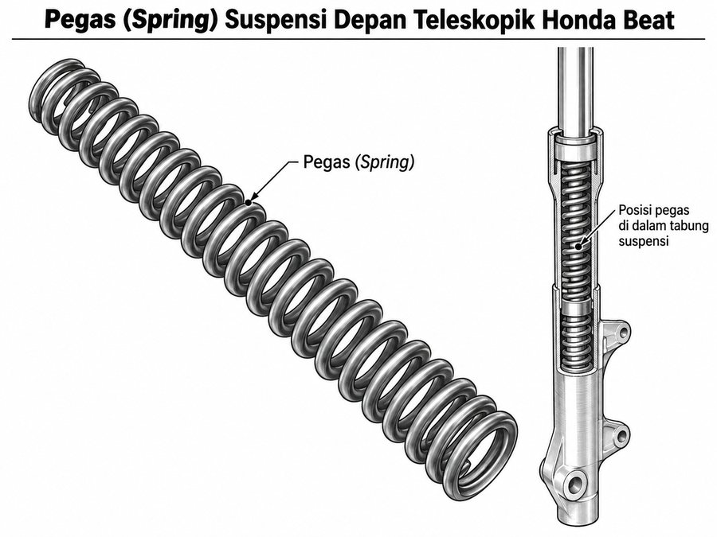
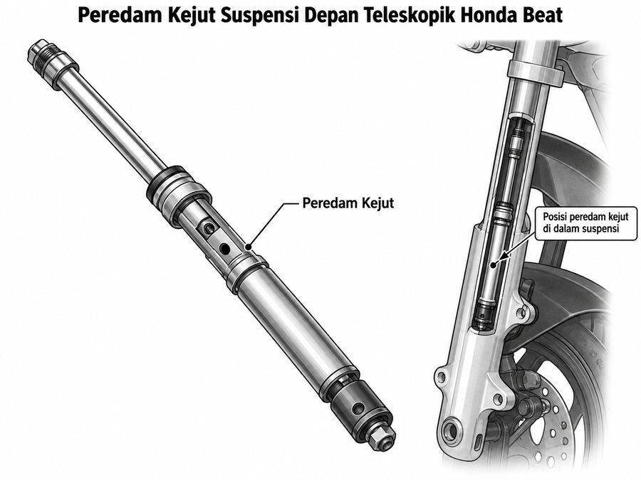
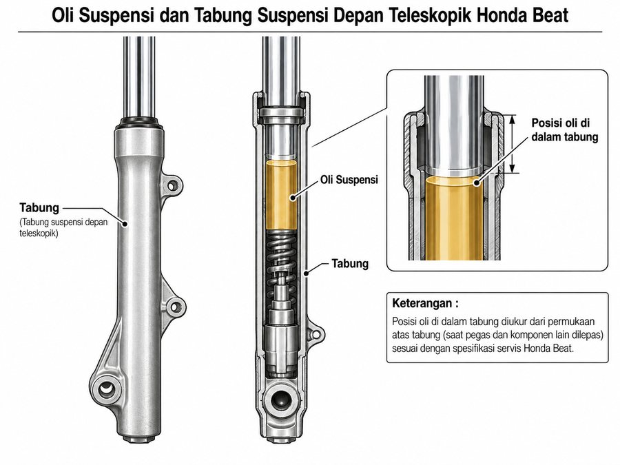
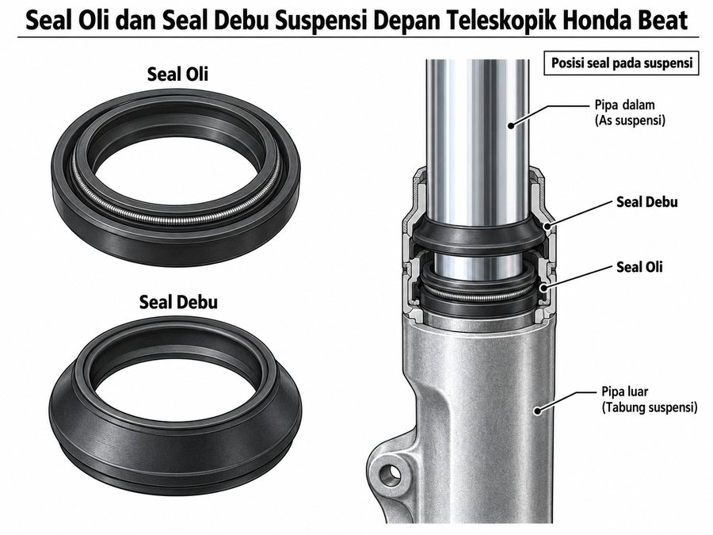

Sistem suspensi depan tipe telescopic fork tersusun dari beberapa komponen yang bekerja secara bersama untuk menyerap kejutan dan menjaga kestabilan kendaraan.
Pada kegiatan praktik, peserta didik akan melakukan pemeriksaan terhadap komponen utama suspensi yaitu pegas, peredam kejut, tabung, oli suspensi, seal oli, dan seal debu.
Suspensi depan menggunakan garpu teleskopik yang meredam benturan melalui peredam kejut hidrolik dan pegas.

Fungsi: Menahan beban kendaraan dan menyerap kejutan awal dari jalan.
Pemeriksaan:
✓ Panjang bebas pegas
✓ Keausan atau deformasi
Gangguan:
Pegas melemah atau patah.

Fungsi: Meredam osilasi atau ayunan berlebih dari pegas.
Pemeriksaan:
✓ Kinerja redaman
✓ Kebocoran fluida
Gangguan:
Redaman terlalu lembut atau keras.

Fungsi: Sebagai media hidrolik peredam dan wadah komponen internal.
Pemeriksaan:
✓ Volume dan kekentalan oli
✓ Kondisi keausan tabung
Gangguan:
Oli berkurang atau terkontaminasi.

Fungsi: Mencegah kebocoran oli dan melindungi komponen dalam dari kotoran.
Pemeriksaan:
✓ Kebocoran pada seal
✓ Kondisi fisik karet seal
Gangguan:
Seal aus atau robek.
Sebelum melakukan praktik, pastikan Anda mampu mengenali:
☐ Nama komponen sistem suspensi
☐ Fungsi setiap komponen
☐ Bagian yang harus diperiksa